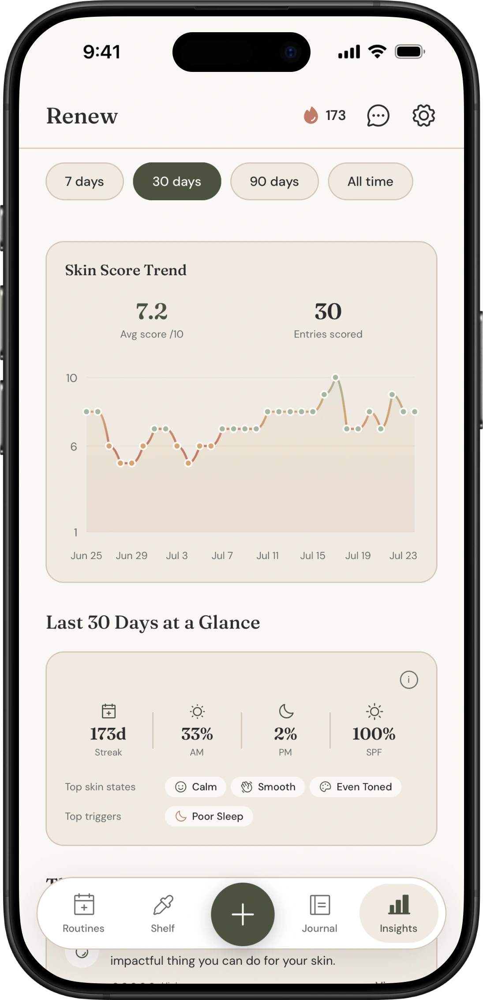

How to Tell If Your Skincare Is Actually Working
The Short Answer
Most people can’t tell whether their skincare is working because they change too many things at once and judge results too early. To actually know: change one product at a time, give it a minimum of four weeks (twelve for anything targeting texture or pigmentation), take photos in fixed lighting at a fixed time of day, and log the things that confound your skin independently of products, mainly sleep, stress, humidity and cycle. Judge the trend across weeks, not how your face looks on any single morning. If you aren’t recording anything, you are relying on memory, and memory is heavily biased toward whatever you bought most recently.

Why You Genuinely Can’t Tell
Skin is slow, and you look at it every day.
That combination is the whole problem. Daily observation makes gradual change invisible: you notice the pimple that appeared overnight, not the fact that you’re getting three a month instead of nine. Meanwhile the actual timescale of skin change runs from weeks to months. Cell turnover alone takes roughly 28 days in your twenties and slows from there, so a product affecting turnover cannot show its full effect inside a month no matter how good it is.
Then there’s the confounding. Your skin on any given day is responding to sleep, stress, weather, humidity, diet, hormones, how much water you drank, whether you touched your face during a bad meeting, and, somewhere in that list, your skincare. Attributing a good skin day to the serum you started last week is usually just a guess wearing a lab coat.
And the most common failure of all: changing three things simultaneously. New cleanser, new serum, new moisturiser, all in the same week. If your skin improves, you’ve learned nothing about which one did it. If it gets worse, you’ve learned nothing about which one to stop.
The Four Things Worth Measuring
You don’t need to quantify everything. Four signals cover almost all of it.
Consistency. Did you actually use the product, on the schedule it needs? This sounds trivial and it is the single biggest confounder in home skincare. A retinoid used four nights a week produces a different result from one used every night, and most people are much less consistent than they believe. Before concluding a product doesn’t work, check you actually used it.
A subjective daily score. One number, same scale, same time of day. I use a 1 to 10. It feels unscientific and it works, because the point isn’t precision on any single day, it’s the shape of the line across 30 days. Noise averages out.
Descriptive state, not just a score. A 7 because you’re dry is a different 7 from a 7 because you’re congested. Tagging state (calm, dry, oily, congested, red, even-toned, textured) is what lets you notice that a product improved one thing while quietly making another worse.
Photos in fixed conditions. Same spot, same light, same time, no makeup, neutral expression. Natural indirect daylight beats bathroom lighting, which is usually top-down and exaggerates texture. Front and both three-quarter angles. Weekly is plenty.
The Protocol
- Establish a baseline before you change anything. Two weeks of your current routine, scored and photographed. Without this you have nothing to compare against, and “before” photos taken after you’ve already started are worthless.
- Introduce one product at a time. One. Not one category, one product.
- Hold everything else constant. Same cleanser, same moisturiser, same SPF, same order. If you change your pillowcase habit or start a new medication in the same fortnight, note it, because it will show up in the data.
- Give it four weeks minimum. Twelve for anything targeting pigmentation, fine lines or texture. Actives that appear to “work” in five days are usually producing hydration or barrier effects, not the change advertised on the box.
- Log daily, review weekly. Daily logging takes fifteen seconds. Weekly review is where you look at the trend line and the photos side by side. Do not evaluate day to day; that’s how you end up abandoning something at the two-week purge stage that was about to work.
- Then decide: keep, drop, or isolate further. If the trend improved and nothing else changed, that’s real evidence. If it’s flat, either extend the window or drop it. If it got worse, stop and let your skin settle for two weeks before testing anything else.
Confounders Worth Logging
These affect your skin independently of what you put on it. If you’re not recording them, you’ll misattribute their effects to products.
| Confounder | Typical lag | Why it matters |
|---|---|---|
| Sleep | 1 to 2 days | Poor sleep shows up as dullness and inflammation, easily mistaken for a product reaction |
| Stress | 2 to 7 days | Cortisol-driven breakouts often arrive after the stressful period has ended |
| Humidity and season | Immediate to days | A moisturiser that “stopped working” in July may just be meeting a drier month |
| Menstrual cycle | Predictable, ~monthly | Cyclical breakouts get blamed on whatever product was newest that week |
| Travel and water | Days | Different water hardness and cabin air change how skin behaves |
| New product elsewhere | Days to weeks | Laundry detergent, hair products and SPF in makeup all touch your face |
The practical upshot: if you tag these alongside your daily score, patterns surface on their own. In my own 30-day data the tag that most often coincided with lower scores was poor sleep, which is not a skincare problem at all, and which I’d previously have blamed on a product.
Tracking Methods Compared
| Method | Good at | Falls down on | Best for |
|---|---|---|---|
| Memory | Nothing | Recency bias, no trend, no photo baseline | Nobody, honestly |
| Notes app | Zero setup, flexible | No structure, no trend view, photos scattered | 3 to 5 products, short experiments |
| Spreadsheet | Genuinely powerful, full control, free | Tedious on mobile, you will stop after ten days, photos live elsewhere | Data-minded people running a single deliberate experiment |
| Paper journal | Pleasant, no phone | No trend visualisation, no photo pairing, easy to lose | People who already journal |
| Dedicated app | Structure, trend charts, photos and scores in one place, reminders | Another app, some are bloated | 10+ products or anything longer than a month |
The honest version: if you use four products and want to test one new serum, a spreadsheet is completely adequate and costs nothing. The case for an app starts when the number of variables outgrows your willingness to maintain a sheet by hand, which for most people is somewhere around ten products or two months.
That’s the gap Renew was built for. Daily score, state tags, photos and product history sit in one place, so the trend chart is a byproduct of logging rather than something you have to assemble.
Frequently Asked Questions
How long before I can tell if a product is working?
Four weeks minimum for hydration, barrier and general calm. Eight to twelve weeks for pigmentation, texture and fine lines. Anything that appears to transform your skin in under a week is almost certainly delivering water and occlusion, which is genuine but not what most actives are sold on.
Is purging real, and how do I tell it from a bad reaction?
Purging typically appears in areas you already break out, arrives within the first two to four weeks of starting an ingredient that speeds cell turnover, and resolves faster than a normal breakout. A reaction tends to appear in new areas, often with itching, burning or persistent redness, and doesn’t settle. If it’s spreading, painful, or lasting beyond six weeks, stop and speak to a professional.
Should I take photos every day?
No. Daily photos mostly capture lighting variance and make you obsess. Weekly, in the same conditions, is the right cadence.
What if my skin gets worse after I start tracking?
That’s usually attention, not causation. You’re noticing things you previously didn’t record. Give it a fortnight before drawing conclusions.
Can I test two products at once if they do different things?
You can, but you’re accepting ambiguity. If something goes wrong you won’t know which to stop. If you’re going to do it, at least stagger the start dates by two weeks so the timing tells you something.
Do I need to score my skin to make this work?
It helps a lot, because it turns a vague impression into a line you can look at. But if scoring feels like a chore, tracking consistency plus weekly photos still gets you most of the way there.
Start With One Change
If you take one thing from this: stop changing three products at once, and write something down every day, even if it’s a single number.
Renew does this in about fifteen seconds a day. Daily score, state tags, weekly photos, and a trend chart that shows you the shape of the last 30 days rather than how you happen to look this morning. Free to start.
Download Renew on the App Store →
This article is general information about tracking and observation methods, not medical advice. It is not intended to diagnose or treat any skin condition. If you have persistent acne, a painful or spreading reaction, sudden changes in a mole or pigmentation, or any skin concern that worries you, please see a doctor or a qualified dermatologist. Individual skin varies enormously, and a professional assessment will always beat a self-tracked chart.
Lars is an indie developer based in Melbourne, Australia. He built Renew after losing track of his own shelf.